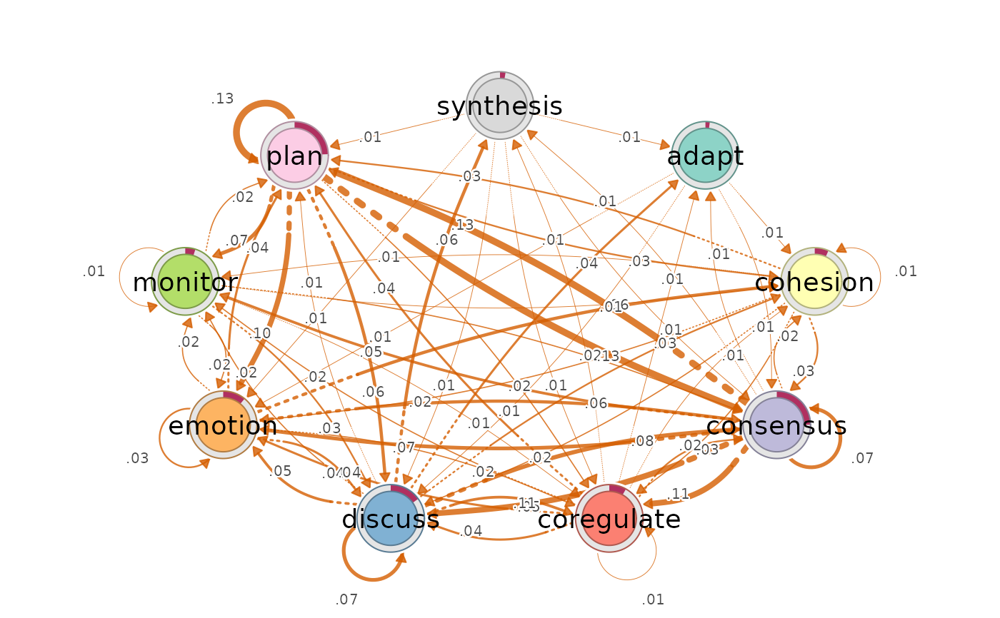

Decomposes the entropy rate of a Markov transition process edge by edge
and returns the decomposition as a network. The entropy rate
\(H = -\sum_{ij} \pi_i P_{ij} \log P_{ij}\)
(transition_entropy; Krejtz et al. 2015, 2025) is an
additive sum over transitions, so every edge \(i \to j\) owns the exact
term \(\pi_i P_{ij} \log(1/P_{ij})\) of the chain-level uncertainty.
No new quantity is estimated: the network displays the summands
of the entropy-rate equation on the transition graph, locating the
process's uncertainty spatially. The returned object is a regular
netobject / cograph_network, so it prints, summarises, and
plots (cograph::splot()) like any other Nestimate network.
Arguments
- x
A
netobject,cograph_network,tnaobject, row-stochastic numeric transition matrix, or a wide sequence data.frame (rows = actors, columns = time-steps; a relative transition network is built automatically).- base
Numeric. Logarithm base.
2(default) for bits,exp(1)for nats,10for hartleys.- weight
Character. Edge weight definition:
"contribution"(default) \(\pi_i P_{ij} \log_b(1/P_{ij})\) - the edge's additive share of the entropy rate; all edge weights sum exactly to \(h(P)\). Thick edges are transitions that are both frequent and unpredictable.
"surprisal"\(\log_b(1/P_{ij})\) - the information content of observing the transition, ignoring how often it occurs. Thick edges are rare, surprising transitions. Low surprisal = expected transition; this is the edge-level predictability reading.
"production"\(F_{ij} \log_b(F_{ij}/F_{ji})\) with \(F_{ij} = \pi_i P_{ij}\) - the edge's contribution to the entropy production rate (irreversibility). Positive on the dominant direction of a pair, negative on the reverse; the two always sum to \((F_{ij}-F_{ji}) \log_b(F_{ij}/F_{ji}) \ge 0\). Pairs with flow in only one direction have infinite production and are excluded (weight 0); their count is reported in
$params$n_oneway_pairs. Total over included pairs is$params$production_rate-0iff the chain is reversible (detailed balance).
- scaling
Character.
"none"(default) keeps weights inbase-units."share"(contribution only) expresses each edge as its percentage of the entropy rate - weights sum to 100 and each label reads "this transition holds x% of the process's unpredictability"; comparable across networks regardless of state count or base."chance"(surprisal only) divides by \(\log_b n\) - the surprisal of a chance-level transition when all \(n\) next states are equally likely:1= chance level, below 1 = expected transition, above 1 = rarer than chance.- normalize
Logical. If
TRUE(default), rows that do not sum to 1 are normalised automatically (with a warning).
Value
A netobject (also class cograph_network) whose
$weights hold the per-edge entropy quantities. When x is a
fitted network (or sequence data, from which a relative network is
built), the result is that network with entropy weights swapped in -
$inits, $meta, $node_groups, and node coordinates
are inherited, so it plots with the same TNA styling and layout as its
source. $method is "entropy". $params carries
base, weight, entropy_rate, and the stationary
distribution stationary.
The object also declares the entropy house style through the
$meta$splot producer contract (honoured by cograph >= 2.4.4):
no minimum-weight pruning (bit values are smaller than probabilities),
2-digit edge labels, vermilion edges, node rings showing the stationary
distribution, and TNA rather than psychometric geometry. Because the
contract states the styling outright, cograph needs no knowledge of the
"entropy" method. cograph::splot(ent) therefore renders
correctly with no arguments; any user argument overrides the contract.
Details
Impossible transitions (\(P_{ij} = 0\)) get weight 0 under both
definitions (the \(0 \log 0 := 0\) convention), so the entropy network
has the same support as the transition network. Self-loops are retained
like any other edge. Deterministic transitions (\(P_{ij} = 1\)) also get
weight 0: observing the inevitable carries no information.
References
Cover, T.M. & Thomas, J.A. (2006). Elements of Information Theory, 2nd ed., chapter 4. Wiley.
Krejtz, K., Duchowski, A., Szmidt, T., Krejtz, I., Gonzalez Perilli, F., Pires, A., Vilaro, A., & Villalobos, N. (2015). Gaze transition entropy. ACM Transactions on Applied Perception, 13(1), 4:1-4:20. doi:10.1145/2834121
Krejtz, K., Hughes, C.J., Stasiak, I., Duchowski, A., & Krejtz, I. (2025). Real-time mobile transition matrix entropy based on eye and head movements. Proceedings of ETRA '25. doi:10.1145/3715669.3723128
See also
transition_entropy for the chain- and state-level
summary, entropy_bayes for credible intervals on the
decomposition, build_network.
Examples
net <- build_network(group_regulation_long,
method = "relative",
actor = "Actor", action = "Action", time = "Time")
ent <- entropy_network(net)
ent
#> Network (method: entropy) [directed]
#> Weights: [0.002, 0.132] | mean: 0.031
#>
#> Weight matrix:
#> adapt cohesion consensus coregulate discuss emotion monitor plan
#> adapt 0.000 0.011 0.011 0.002 0.005 0.008 0.003 0.002
#> cohesion 0.002 0.009 0.033 0.024 0.016 0.024 0.011 0.027
#> consensus 0.009 0.023 0.074 0.113 0.113 0.069 0.051 0.132
#> coregulate 0.008 0.014 0.032 0.010 0.042 0.036 0.025 0.040
#> discuss 0.041 0.032 0.080 0.046 0.070 0.052 0.019 0.011
#> emotion 0.002 0.058 0.057 0.018 0.037 0.031 0.019 0.036
#> monitor 0.004 0.011 0.021 0.012 0.026 0.015 0.005 0.023
#> plan 0.002 0.033 0.127 0.025 0.065 0.100 0.069 0.130
#> synthesis 0.013 0.004 0.014 0.005 0.007 0.007 0.002 0.007
#> synthesis
#> adapt 0.000
#> cohesion 0.002
#> consensus 0.013
#> coregulate 0.009
#> discuss 0.060
#> emotion 0.003
#> monitor 0.005
#> plan 0.004
#> synthesis 0.000
#>
#> Initial probabilities:
#> consensus 0.214 ████████████████████████████████████████
#> plan 0.204 ██████████████████████████████████████
#> discuss 0.175 █████████████████████████████████
#> emotion 0.151 ████████████████████████████
#> monitor 0.144 ███████████████████████████
#> cohesion 0.060 ███████████
#> synthesis 0.019 ████
#> coregulate 0.019 ████
#> adapt 0.011 ██
# \donttest{
if (requireNamespace("cograph", quietly = TRUE)) {
cograph::splot(ent)
}

# }